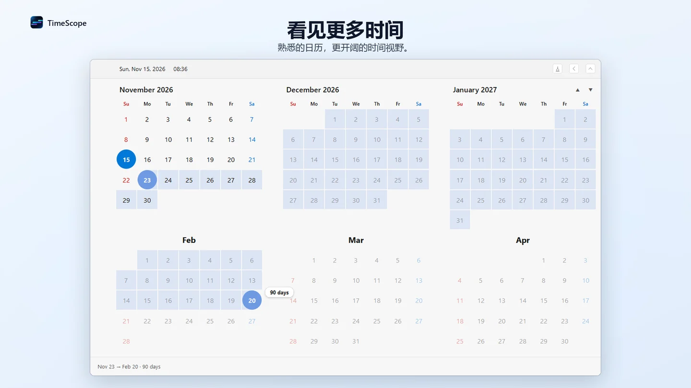
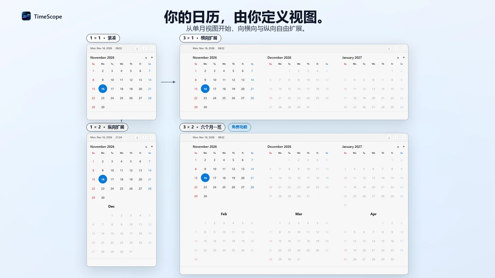
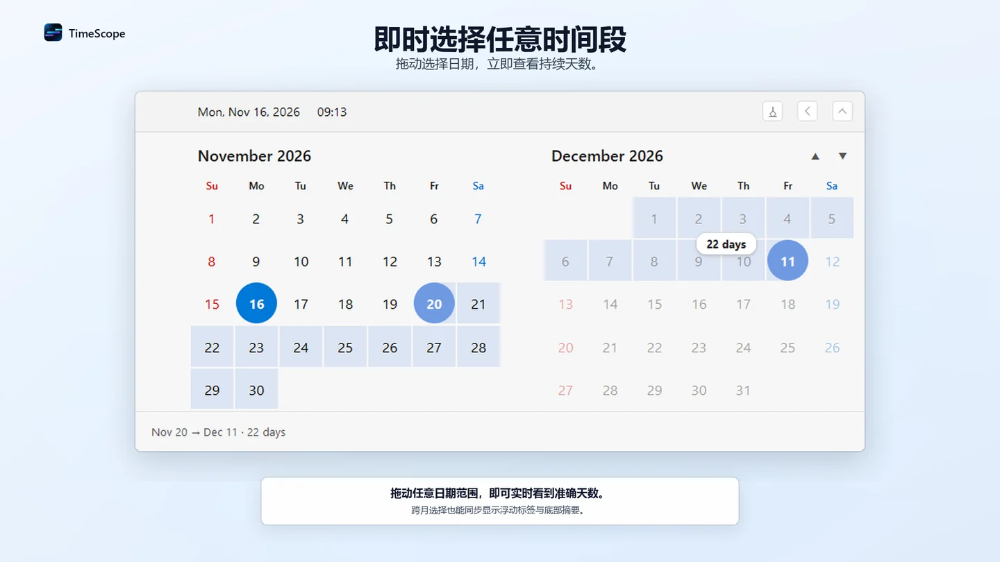
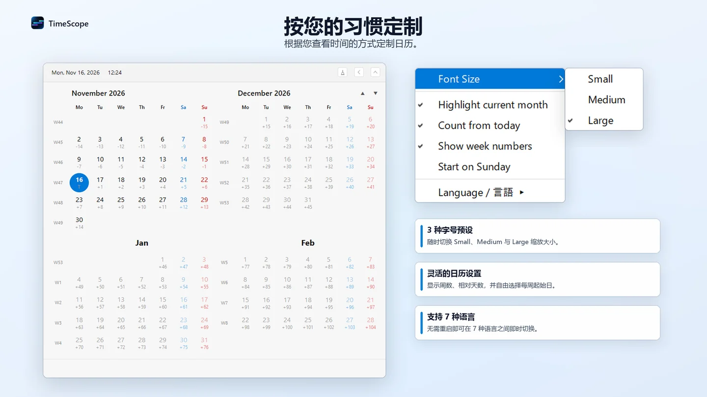
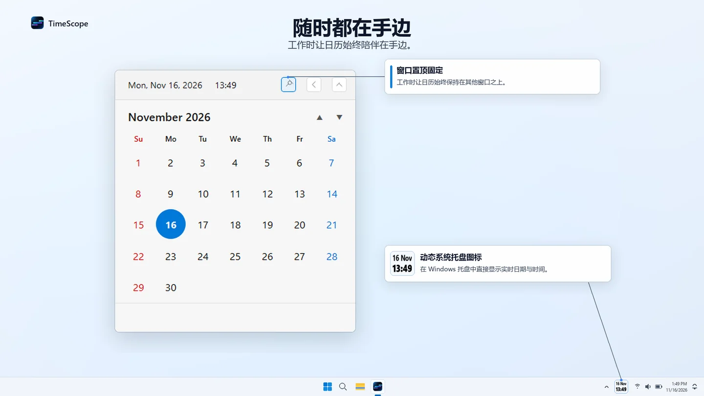

一次看见更多月份
从紧凑的单月视图开始，根据可用窗口和屏幕空间横向与纵向扩展显示更多月份。
一款适用于 Windows 的轻量桌面日历，帮助您同时查看多个月份、选择日期范围并一目了然掌握天数。

专为快速浏览日期、计算时间跨度与轻量桌面使用而打造。
从紧凑的单月视图开始，根据可用窗口和屏幕空间横向与纵向扩展显示更多月份。
拖动选择任意日期范围，浮动标签与底部摘要会立即显示精确天数，跨月同样支持。
通过一次性应用内购买解锁多区间对比、多显示器选择以及自定义节假日与工作日。
所有核心日历功能均免费提供，专注于纯粹的时间查看体验，无日程管理冗余。
充分利用可用窗口与屏幕空间，自由横向或纵向扩展所显示的月份数量。

无需手动数日历，拖动即可立即了解旅行、项目或两个日期之间的准确天数。

无需重启即可直接切换每周起始日、时间辅助标识与界面语言。

将日历固定在其他窗口之上，并通过 Windows 动态系统托盘图标一眼查看当前日期与时间。

核心功能完全免费。如需进阶对比与多屏功能，可在应用内通过 Microsoft Store 升级。
包含全部核心多月视图、日期范围选择与桌面个性化设置。
在应用内通过 Microsoft Store 一次性买断解锁的可选扩展包。
TimeScope Pro 为一次性应用内购买（无需订阅），在应用内通过 Microsoft Store 完成解锁（基准价格 $4.99 USD，各地区货币与税费可能有所不同）。
来自 TimeScope 实机界面的真实截图，完整展示免费版与 Pro 功能。
同时显示多个月份的桌面日历视图，并展示连续 90 天的日期范围选择效果。
前往 Microsoft Store 免费获取适用于 Windows 10 和 Windows 11 (x64) 的 TimeScope – Visual Calendar。
从 Microsoft Store 获取